评级说明
配套视频：【命运 2】购物清单 紫枪部分杂谈
在不同场景下，不同武器的推荐分级会出现变化。主要区分场景：高难宗师、副本清怪／机制、副本输出。伤害 DPS 参考武器框架页。
T0：无替代性，独一档
T1：强力，不错的选择
T2：能用
T3：一般
T4：不建议使用
为了更精细化评级，会出现 T0.5／T1.5 的小数点评级。评级只是为了提供衡量强度的标准，请勿上纲上线。不会出现 PVP 枪，不会出现基本没有用途的枪。
如何衡量一把武器的价值？
清怪／高难宗师等：
①武器形态优秀，对精准伤害要求不高
②武器伤害合格
③武器弹药经济优秀：弹药生成属性高，每盒弹药总伤高
④功能性：技能回转（超凡／大招），硬减软减获取，高频率 dot，辅助队友（奶枪／切割／疲惫）……
输出：
①伤害高：DPS 高，切换 DPS 高
②总伤高
③爆发高
④功能性：劫子弹，高频率 dot，技能回转……
冲击支撑如果不带神器废墟石板的不稳定神枪手和 NPA 的不稳定流动，则一定要和不稳定弹药 Perk 搭配。面对怪的 DPS 从高到低：手枪、手炮、自动步枪／脉冲／弓箭、斥候、微冲。在有 vog 套的情况下比起羸弱能量球会更倾向带增伤 Perk。
动能武器：如果不反感 pve 打精准的话，可以尝试萤火虫+墓碑，萤火虫可以自动碎掉墓碑的冰块造成高伤范围爆炸，而萤火虫又是火属性武器伤害，就实现了一把枪触发预言 4 的抵抗 3 效果和回复 16% 近战手雷能量，携带药剂师或女王香炉的迎接风暴还可以同时射出减速弹片，也可利用寒风凛凛获取冰霜护甲。
通常动能和虚空是最佳的清怪传说白弹：虚空因为不稳定弹药给予的清怪能力，冲击支撑给予的生存能力，动能因为羸弱能量球+动能震颤和天生的对非战斗人员有天生的 15% 增伤。
白弹 · 自动步枪（奶枪）
类型评级 T0。猎人日志和 NPA 神器有自动步枪神器可获得抵抗 2 和增伤，自动步枪本身也是不错的白弹框架，奶枪又有作为工具枪的不可替代性
| 武器 | 图标 | 评级 | 框架 射速 |
属性 | 勇士 | Perk 三号位 | Perk 四号位 | 获取地点 | 评级理由 |
|---|---|---|---|---|---|---|---|---|---|
| 毫不迟疑 | T0 | 支援 600 | 烈日 | 医治 | 羸弱能量球 混沌重塑 | 苍白之心 | 医治 perk 给予自己和队友恢复 1，能和仁慈余烬联动。苍白之心起源特性加上反过载元素超充器快速回转火大招 | ||
| 迪凯特 02 | T0 | 支援 600 | 冰影 | 医治 羸弱能量球 | 互惠 | 扭曲 | 医治+互惠一次给予自己和队友两层冰霜护甲的同时还有治疗，兼顾软硬减的优质奶枪 | ||
| 光鳃之调 | T1 | 支援 600 | 电弧 | 医治 震颤反馈 | 超充弹匣 羸弱能量球 | 破碎王座 | 虽然给予的增幅只有五秒，但是可以续别的 15s 增幅，输出场景可用来触发 NPA 雷霆反击，震颤反馈+羸弱可以用来清怪 | ||
| 永恒之尖 | 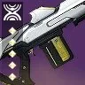 | T1 | 支援 600 | 虚空 | 羸弱能量球 互惠 冲击支撑 | 枯萎凝视 不稳定弹药 | 史诗沙漠 | 没有医治，一次给队友 1/3 的虚空盾太少了。枯萎凝视和羸弱能量球有一定功能性 | |
| 金刚磐石 | 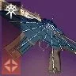 | T2 | 支援 600 | 缚丝 | 切割 互惠 | 能量球 | 老九 | 由于给的是拆解而不是织造铠甲成为功能性最差的奶枪，新版 T5 反而把切割取消了只能老九 roll |
白弹 · 自动步枪
类型评级 T0。自动步枪无论伤害还是手感都是中上级别，给到最高评级是因为猎人日志和 NPA 神器有自动步枪神器可获得抵抗 2 和增伤，注意抵抗 2 需要 10 次自动步枪命中，所以射速越快触发越快，射速高有天生优势
| 武器 | 图标 | 评级 | 框架 射速 |
属性 | 勇士 | Perk 三号位 | Perk 四号位 | 获取地点 | 评级理由 |
|---|---|---|---|---|---|---|---|---|---|
| 红衣威尔 | T0 | 适配 600 | 动能 | 羸弱能量球 | 动能震颤 | 欧洲无人区 | 反屏障，适配框架也是所有自动步枪中最优秀的框架。动能自带除以外战斗人员 15% 增伤。羸弱能量球+动能震颤是最合适的组合 | ||
| 痛苦的饥饿 | 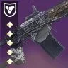 | T0 | 适配 600 | 虚空 | 冲击支撑 爆破专家 枯萎凝视 | 武器大师 狂暴 不稳定弹药 | 智谋 | 虚空属性武器是除动能之外最优秀的清怪属性。虚空自动步枪吃满了 NPA 神器 | |
| VS 热电推进 | T0.5 | 适配 600 | 电弧 | 羸弱能量球 | 震颤反馈 | 晚星之主 | |||
| 狙猎 Mk.47 | 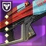 | T1 | 轻质 600 | 电弧 | 震颤反馈 | 羸弱能量球 混沌重塑 | 快雀竞赛 | 轻质框架+轻量级起源特性跑起来很快 | |
| 鲁莽神谕 | T1 | 速射 720 | 虚空 | 维度偏移 不稳定弹药 | 混沌重塑 冲击支撑 | 万神殿 | 万神殿版本 perk 池比花园版本好，起源特性优秀 |
白弹 · 手枪
类型评级 T0。伤害最高的白弹类型。可惜没有优秀的产球枪
| 武器 | 图标 | 评级 | 框架 射速 |
属性 | 勇士 | Perk 三号位 | Perk 四号位 | 获取地点 | 评级理由 |
|---|---|---|---|---|---|---|---|---|---|
| 袖珍卫士 | T0 | 动态热量 360 | 虚空 | 冷却饰品（vog 套） 不稳定弹药 | 冲击支撑 狂乱 杀戮弹匣 | 无序边界 | 伤害最高的白弹中伤害最高的框架 | ||
| 黄铜攻击 | 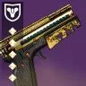 | T0 | 重型点射 325 | 虚空 | 冲击支撑 | 狂乱 不稳定弹药 | 世界 暗屋之声 | 不错的框架，原始特性能叠到 15% 减伤非常厉害 | |
| 傍晚 SI4 | T0.5 | 适配点射 491 | 烈日 | 治疗弹匣 即兴弹药 | 辉耀炽热 邪剑守则 燃烧野心 | 先锋 | 伤害最高的手枪。高到能轻松反 50 光屏障 | ||
| 日心 QSc | 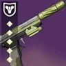 | T1 | 轻质 360 | 烈日 | 治疗弹匣 | 腹背受敌 辉耀炽热 狂乱 | 世界掉落 | 框架还行，轻质跑得快 | |
| 难以逾越 | 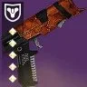 | T1.5 | 精密 260 | 虚空 | 羸弱能量球 | 腹背受敌 不稳定弹药 | 枪匠兑换 凯尔之陨 | 最差的框架但是是理论白弹最快产球 | |
| 无名之秋 | 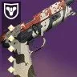 | T1.5 | 轻质 360 | 电弧 | 羸弱能量球 | 福特子弹 腹背受敌 狂乱 | 熔炉 |
白弹 · 微型冲锋枪
类型评级 T1。尽管作为伤害最低的白弹，但他是最快的羸弱能量球触发器，手感优秀受到多数人青睐
| 武器 | 图标 | 评级 | 框架 射速 |
属性 | 勇士 | Perk 三号位 | Perk 四号位 | 获取地点 | 评级理由 |
|---|---|---|---|---|---|---|---|---|---|
| 多机系统 CCX | T0 | 轻质 900 | 动能 | 羸弱能量球 | 动能震颤 | 铁骑 | 唯一的 900 羸弱动能震颤微冲 | ||
| 岁时之巅 | 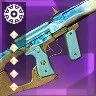 | T0 | 轻质 900 | 烈日 | 羸弱能量球 治疗弹匣 | 混沌重塑 燃烧野心 辉耀炽热 | 高塔二至点 | 羸弱能量球+混沌重塑和优秀的特克斯厂起源特性让他成为副手最优秀的微冲，手感优秀，perk 池豪华，燃烧野心是给松身裤火猎的特殊选择 | |
| 不可饶恕 | 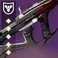 | T0 | 攻击 720 | 虚空 | 羸弱能量球 不稳定弹药 | 混沌重塑 冲击支撑 | 二象性 | 虚空属性有许多虚空相关神器选择，攻击框架本身也是微冲伤害最高的框架，起源特性加填装，弹药生成略低 | |
| 驯顺 | T0 | 轻质 900 | 动能 | 动能震颤 | 混沌重塑 | 门徒 | 动能震颤+混沌重塑伤害很高，起源特性可以回血 | ||
| 隐士 | 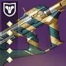 | T0 | 轻质 900 | 虚空 | 冲击支撑 | 混沌重塑 武器大师 不稳定弹药 | 猛攻 | 起源特性可回转手雷能量 | |
| 紧急求生包 | 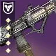 | T0 | 适配 900 | 虚空 | 羸弱能量球 冲击支撑 | 狂乱 集体行动 不稳定弹药 | 智谋 | ||
| 越界 | 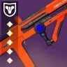 | T1 | 轻质 900 | 电弧 | 福特子弹 | 狂乱 震颤反馈 | 熔炉 | 福特子弹+狂乱的快速换弹组合 | |
| 迫近 | T1 | 轻质 900 | 缚丝 | 切割 | 混沌重塑 | 救赎边缘 | 切割很独特 | ||
| 帕拉贝伦 | T1 | 适配 900 | 烈日 | 治疗弹匣 回转弹药 | 羸弱能量球 集体行动 辉耀炽热 | 欧洲无人区 | 起源特性疲惫爆炸很优秀。回转弹药可以破 50 光屏障 | ||
| 判决 | T1 | 精密 600 | 动能 | 羸弱能量球 | 动能震颤 | 预言 | 虽然是最差的精密框架。但是动能属性和起源特性增伤弥补了这一点 |
白弹 · 手炮
类型评级 T1。手炮是伤害等级第二高的白弹，手感不错，中距离射程也是其优势之一，有最好的劫子弹工具枪和所有武器中最高伤害的白弹
| 武器 | 图标 | 评级 | 框架 射速 |
属性 | 勇士 | Perk 三号位 | Perk 四号位 | 获取地点 | 评级理由 |
|---|---|---|---|---|---|---|---|---|---|
| 星狐座 | 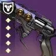 | T0 | 精密 180 | 冰影 | 高爆载荷 | 边打边劫 | 破碎王座 | 最常使用的边打边劫工具枪。手感射速优秀，起源特性还加操作，主手白弹边打边劫的最优选 | |
| 绽放兰花 | 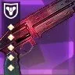 | T0 | 适配 140 | 虚空 | 冲击支撑 杀戮弹匣 边打边劫 即兴弹药 | 高爆载荷 武器大师 狂暴 不稳定弹药 | 竞技场 | 豪华的 perk 池和起源特性，虚空属性让他成为最强的白弹清怪手炮 | |
| 克洛塔之语 | 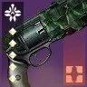 | T0 | 精密 180 | 虚空 | 冲击支撑 爆破专家 | 狂乱 武器大师 不稳定弹药 | 克洛塔的末日 | 180 的最佳之选 | |
| 无爱 | 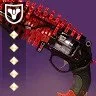 | T0 | 重型点射 257 | 缚丝 | 高强度备弹 快速命中 | 元素磨砺 | 分离教义 | 虽然幸运裤已不复往日荣光，顶级的 perk 池和顶级的原始特性让他成为最好的双发手炮，通常与艾莲娜一起使用，缚丝属性适合废墟石板神器 | |
| 艾恩伍德 03 | T0 | 散射 100 | 虚空 | 冲击支撑 威胁移除器 | 腹背受敌 集体行动 武器大师/雪上加霜 不稳定弹药 | 扭曲 | 最高 DPS 框架的虚空属性，perk 池优秀 | ||
| 金质消除者 | 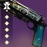 | T0 | 散射 100 | 动能 | 威胁探测 威胁移除器 盗墓者 | 战壕炮管 级联点 | 试炼 | 作为动能属性是最高的散射手炮伤害 替代：三冠得主（高塔运动会） | |
| 后代 | 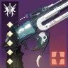 | T1 | 精密 180 | 电弧 | 福特子弹 | 高爆载荷 狂乱 | 深岩墓室 | 伏特+高爆的组合非常适合清怪 | |
| 野兽国度 | T1 | 适配 140 | 电弧 | 换档 | 集体行动 | 最后一愿 | 仅限药剂包幸运裤的玩法 | ||
| 命运终结者 | 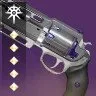 | T1 | 适配 140 | 动能 | 高爆载荷 动能震颤 | 狂乱 元素磨砺 萤火虫 | 玻璃宝库 | 手感好，perk 池和起源特性优秀 | |
| 扎乌利的克星 | 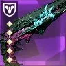 | T1 | 适配 140 | 烈日 | 高爆载荷 转向（王陨版本） | 混沌重塑 辉耀炽热 | 万神殿 国王的陨落 | 分为万神殿和王陨两种版本，万神殿起源特性提供额外的弹药生成和面板，王陨起源在有盟友时有额外填装效果，万神殿版本同时拥有两种起源特性，王陨版本有转向 | |
| 改装 B-7 手枪 | 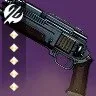 | T1.5 | 动态热量 180 | 冰影 | 萤火虫 | 墓碑 | 无序边界 | 替代 鹰月/庄严追忆 | |
| 死从天降 | 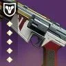 | T2 | 适配 140 | 动能 | 高爆载荷 | 羸弱能量球 | 先锋 | 高爆+羸弱能 4 下产能量球，但除此之外没什么用了，伤害不够看 |
白弹 · 脉冲步枪
类型评级 T1.5。脉冲步枪的伤害中等偏上，适合中远距离的清怪环境，由于方便打精准伤害多用于叠加单人特工层数
| 武器 | 图标 | 评级 | 框架 射速 |
属性 | 勇士 | Perk 三号位 | Perk 四号位 | 获取地点 | 评级理由 |
|---|---|---|---|---|---|---|---|---|---|
| 乔科斯的长剑 | 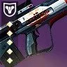 | T0.5 | 重型点射 324 | 虚空 | 冲击支撑 边打边劫 爆破专家 | 亡命之徒 杀戮弹匣 枯萎凝视 不稳定弹药 | 熔炉 | 伤害最高最好的脉冲框架，perk 池优秀，边打边劫+枯萎凝视的组合可作为工具枪 | |
| 格网队长 | T1 | 速射 540 | 虚空 | 冲击支撑 爆破专家 | 狂乱 铤而走险 不稳定弹药 | 世界 班西 | 框架优秀，手感非常舒服，perk 池优秀 | ||
| 唠叨龙骨 | T1 | 轻质 450 | 动能 | 羸弱能量球 | 动能震颤 | 万神殿 | 最好的羸弱+动能脉冲，优质起源特性 | ||
| 作废 | T1 | 重型点射 324 | 烈日 | 治疗弹匣 爆破专家 燃烧野心 | 混沌重塑 辉耀炽热 羸弱能量球 | 救赎的边缘 | 伤害最高最好的脉冲框架，perk 池优秀 | ||
| 莱德瑞克斯穿甲剑 | T1.5 | 传承 PR-55 450 | 冰影 | 萤火虫 爆破专家 | 墓碑 狂乱 元素磨砺 | 熔炉 | 萤火虫+墓碑，传承 PR-55 框架的 AA 很高适合打头 |
白弹 · 弓箭
类型评级 T2。弓箭也是伤害中等偏上的武器类型，但是碍于需要不断的拉弓和较低的伤害转化效率通用程度不高
| 武器 | 图标 | 评级 | 框架 射速 |
属性 | 勇士 | Perk 三号位 | Perk 四号位 | 获取地点 | 评级理由 |
|---|---|---|---|---|---|---|---|---|---|
| 刺骨寒风 | T1 | 精密 | 动能 | 迷惑爆发 即兴弹药 | 小试牛刀 爆炸箭头 动能震颤 | 木卫二 | 迷惑爆发+小试牛刀在弓箭上真的是非常有意思而且有强度的组合，最好的弓箭框架 | ||
| 恶意尖牙 | 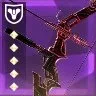 | T1.5 | 轻质 | 冰影 | 墓碑 即兴弹药 小时牛刀 | 萤火虫 爆炸箭头 狂乱 | 竞技场 | 墓碑+萤火虫，弓箭的 AA 很高适合打头，顶级原始特性 | |
| 牡鹿之角 | T1.5 | 精密 | 电弧 | 小试牛刀 | 福特子弹 | 铁骑 | 小试牛刀+福特子弹 cos 三体坐观者 同类替代：救赎的边缘 | ||
| 累积救赎 | T2 | 精密 | 动能 | 羸弱能量球 | 动能震颤 爆炸箭头 | 花园 | 羸弱能量球+动能震颤两发一个球，原始特性方便破屏障 | ||
| 幸运星 | 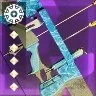 | T2 | 轻质 | 虚空 | 冲击支撑 即兴弹药 小试牛刀 | 爆炸箭头 不稳定弹药 | 高塔二至点 | 没有优秀虚空精密弓的下位替代 |
白弹 · 斥候
类型评级 T3。倒数第二的伤害水平，适合远距离作战，唯一上场机会是作为劫子弹工具枪
| 武器 | 图标 | 评级 | 框架 射速 |
属性 | 勇士 | Perk 三号位 | Perk 四号位 | 获取地点 | 评级理由 |
|---|---|---|---|---|---|---|---|---|---|
| 允诺 | T2 | 轻质 200 | 虚空 | 边打边劫 冲击支撑 | 高爆弹药 枯萎凝视 不稳定弹药 | 梦城 | 轻质的高操作让他成为最合适的劫子弹斥候 | ||
| 无视 | 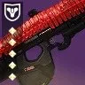 | T2 | 速射 260 | 电弧 | 萤火虫 | 福特子弹 狂乱 | 分离教义 | 最好的框架和顶级原始特性 | |
| 伏打阴影 | 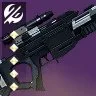 | T2 | 平衡热量 260 | 电弧 | 震颤反馈 | 狂乱 | 平衡 | 不错的长弹匣输出能力 | |
| 受托 | 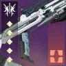 | T2 | 速射 260 | 烈日 | 治疗弹匣 | 辉耀炽热 转向 燃烧野心 | 深岩墓室 | 最好的框架和顶级的手感 | |
| 无感 | 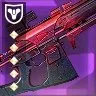 | T2.5 | 精密 180 | 电弧 | 集体爆破 | 高爆载荷 | 竞技场 | 唯一还算可观手雷回转的白弹，高爆载荷能触发两次集体爆破，虽然是伤害最低的框架 |
绿弹 · 火箭脉冲
类型评级 T0。命运 2 最强的清怪武器，有着最完美的武器形态，存在双绿 bug 不会减少拾取的子弹，不适合输出
参考数值：DPS 2898 · 总伤 39562
| 武器 | 图标 | 评级 | 框架 射速 |
属性 | 勇士 | Perk 三号位 | Perk 四号位 | 获取地点 | DPS | 总伤 | 切换 DPS | 备注 | 评级理由 |
|---|---|---|---|---|---|---|---|---|---|---|---|---|---|
| 完美逆行 | 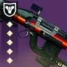 | T0 | 微型导弹 200 | 缚丝 | 回转弹药/沙场备战 信标弹药 | 元素磨砺/武器大师 切割（旧版） 狂乱 连锁反应 | 巅峰 先锋 | 豪华的 perk 池，不错的起源特性，存在 bug 能够同时吃到自己和副手的回收一盒强化弹药回 7 发，利用这个特性打本时可以用作捡绿弹武器，顶级的弹药经济武器，切割是非常优秀的 perk，适合猎人和汇编腿术士使用 | |||||
| 韦兰迪夫-D | 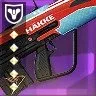 | T0 | 微型导弹 200 | 烈日 | 空中扳机 治疗弹匣 爆破分配器 | 超因果亲和/聚合充能 辉耀炽热 铤而走险 | 快雀竞赛 | 最好最常用的副手清怪枪，perk 池优秀，三号位有顶级清怪 perk 空中扳机，操作手感极佳，起源特性加快奔跑速度。 注意副手火箭脉冲不吃回收 | |||||
| Ψ永恒 IV | 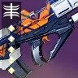 | T1 | 微型导弹 200 | 电弧 | 涓流充能 爆破分配器 信标弹药 | 元素磨砺 我为人人 肾上腺素成瘾 | 高塔纪念碑火力战队 萨瓦拉 | perk 池一般，大部分情况会优先选择火脉冲 注意副手火箭脉冲不吃回收 |
绿弹 · 榴弹发射器
类型评级 T0。区域拒止和微型导弹在榴弹这个大家庭中各据半壁，其他框架几乎没有出场空间
| 武器 | 图标 | 评级 | 框架 射速 |
属性 | 勇士 | Perk 三号位 | Perk 四号位 | 获取地点 | DPS | 总伤 | 切换 DPS | 备注 | 评级理由 |
|---|---|---|---|---|---|---|---|---|---|---|---|---|---|
| 区域拒止 T0 DPS 630 总伤 75585 切换 DPS 8398：优秀的武器形态，高频率 dot，高总伤，高弹药生成，反过载，神器红利，让他在多个领域都有高光用途：快速攒超凡，配合神器获取减伤，速通常用的配合元素超充攒大招，刷子弹，输出时补伤害 6s 切一次的伤害吃满其实总伤比山巅还要高，突破清场挂虚弱，松身裤快速回转闪身，快速叠加电光充能层数 | |||||||||||||
| 驱逐引擎 | 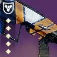 | T0 | 区域拒止 72 | 冰影 | 自填 空中扳机 | 混沌重塑 聚合充能 | 巅峰 先锋 | 驱逐引擎和迷失信号是两把面对大部分玩家的最强榴弹，药剂神器风寒（寒风凛凛）是最简单获取高额减伤的来源，而冰粪坑作为高频率 dot 单弹匣武器可以快速叠加冰霜护甲，这套思路在高难宗师和压力环境输出都是 T0 级别，有减速时也可以快速产出冰影碎片。 迷失信号因为三号位的金中藏弹给予的弹药经济多在宗师使用；驱逐引擎因为四号位的优秀增伤和起源特性多在地牢 raid 中使用 | |||||
| 迷失信号 | 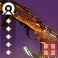 | T0 | 区域拒止 72 | 冰影 | 金中藏弹 | 爆破专家 我为人人 | 安可 | ||||||
| 庆典飞行 | 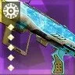 | T0 | 区域拒止 72 | 缚丝 | 切割 爆破专家 嫉妒军火库 | 羸弱能量球 元素磨砺 斩首 | 高塔二至点 | 庆典飞行因为切割能量球的 perk 组合，适合配合崩解获取织造铠甲和施加拆解，由于拆解可以协助释放电光充能，所以非常适合电泰坦和忍野手电猎等类似玩法，因为和岁时之巅同样获取来源于高塔纪念碑，是新手最好获得的松身裤组件，但强度和弹药经济都是药剂师迷失信号更优 | |||||
| VS 速度指挥 | 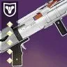 | T0.5 | 区域拒止 72 | 虚空 | 重建 冲击支撑 爆破专家 嫉妒军火库 | 羸弱能量球 不稳定弹药 狂乱/诱导/元素磨砺 | 晚星之主 | 优秀的 perk 池和起源特性，特点在于能够高频触发不稳定弹药清怪和触发不稳定神枪手回转职业技能，常用于觅敌矛隼猎和星云之歌术士 | |||||
| 送魂者 | 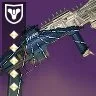 | T0.5 | 区域拒止 72 | 电弧 | 自填 即兴弹药 爆破专家 爆炸分配器 | 羸弱能量球 福特子弹 任意合适增伤 | 异端深坑 | 顶级 perk 池和原始特性 | |||||
| 铭纹-41 | 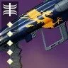 | T1 | 区域拒止 72 | 烈日 | 自填 治疗弹匣 | 羸弱能量球 二元轨道 斩首/武器大师 辉耀炽热 | 高塔纪念碑 班西 | 所有区域拒止榴弹中最平庸的 perk 池和起源特性，会用在石板元素超充器转火系大招和千语松身裤挂突破清场 | |||||
| 微型导弹 T0 总伤 57426 切换 DPS 4603：最常用作山巅跳跑图，顶级的切换 DPS | |||||||||||||
| 机巧纬线 | 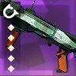 | T0 | 微型导弹 90 | 缚丝 | 空中扳机 嫉妒军火库 滑行射击 | 双脚架 聚合充能/元素磨砺 诱导推销 | 高塔纪念碑 | 顶级 perk 池和原始特性，山巅跳跑图有空板+双脚架，输出有嫉妒军火+聚合是其他两把榴弹无法逾越的大山 | |||||
| 经纬仪 | 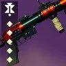 | T1 | 微型导弹 90 | 电弧 | 重建 | 元素磨砺 狂乱 | 高塔纪念碑 萨瓦拉 | 唯一的一把副手山巅 | |||||
| 波形 T2：在一些平光本可以用作清怪，出现在一些 raid 长直道速通，拼好牢活动中的冰波形重力井曾经经常用来收集子弹，可惜的是如今已经绝版，但现在有 pvp2 件套代替出场率会降低 | |||||||||||||
| 新太平洋碑文 | 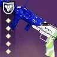 | T2 | 波形 72 | 冰影 | 空中扳机/金中藏弹 连锁反应 爆破专家 | 转向 杀戮弹匣/收割者贡品 | 深渊机灵 | 优秀的 perk 池。适合药剂包，拼好牢绝版版本有重力井 | |||||
| 自制 | 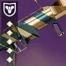 | T2 | 波形 72 | 电弧 | 转向 空中扳机 爆破专家 | 福特子弹 我为人人/狂乱 连锁反应 泉源 | 猛攻 | 优秀的 perk 池和起源特性，有门徒和猛攻两个版本，推荐猛攻版本 | |||||
| 双重火力 T3 总伤 55819 切换 DPS 5236：最好的致盲榴弹框架，但是现在绝大部分场景都没有致盲榴弹的上场空间了，嫉妒军火库可用于三切补输出，然而双发实战极易打空，所以几乎不会在任何场景见到他的出场。狂野飞禽拼好牢版本有重力井，已经绝版 | |||||||||||||
| 狂野飞禽 | 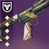 | T2.5 | 双重火力 120 | 虚空 | 自填 嫉妒军火库 | 枯萎凝视 聚合充能/诱导推销 元素磨砺 | 守望者尖塔 | 顶级 perk 池和原始特性，旧版本有金中藏弹和重力井已绝版 | |||||
| 礼拜 | 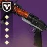 | T2.5 | 双重火力 120 | 冰影 | 滑行健射 嫉妒军火库 | 金中藏弹 冰冷弹匣 | 世界 | 现存唯一可刷取的金中双发致盲榴弹 | |||||
| 轻质 T4：最意义不明的框架，双发榴弹在现版本几乎没有用处然而也是是他的纯上位 | |||||||||||||
| 拯救者的喝彩 | 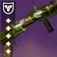 | T3 | 轻质 90 | 电弧 | 涓流充能 | 换档 | 巅峰 先锋 | 3422 | 43373 | 涓流充能+换档一直射很好玩，DPS 比融合高但总伤太低 | |||
绿弹 · 霰弹枪
类型评级 T0。最好的近身伤害武器，散射框架之间各有其优势区间，独头框架整体劣势
| 武器 | 图标 | 评级 | 框架 射速 |
属性 | 勇士 | Perk 三号位 | Perk 四号位 | 获取地点 | DPS | 总伤 | 切换 DPS | 备注 | 评级理由 |
|---|---|---|---|---|---|---|---|---|---|---|---|---|---|
| 攻击 T0：虽然比最顶级 DPS 的速射和轻质略低，但是有唯一一把真正的顶级双增伤喷子裁决定论。最好的弹药经济：高总伤和高弹药盒总伤。 | |||||||||||||
| 裁决定论 | 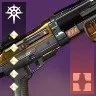 | T0 | 攻击 60 | 电弧 | 聚合充能 | 战壕炮管 元素磨砺 | 玻璃宝库 | 5398 | 108395 | 电弧复合 | 顶级 perk 池和原始特性，最强输出绿弹之一，常与混乱无序和驱逐引擎搭配输出，宗师警戒等高难本也常有他的身影，强度堪比大帝喷，俗称小帝喷 | ||
| 猝死 | 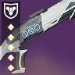 | T0.5 | 攻击 60 | 虚空 | 雪上 重建 | 集体行动 元素磨砺 战壕炮管 | 预言 | 雪上+任意增伤的组合在如今版本多见于冰猎忠诚面具的组合，碎片刺激的低语弥补了填装需求，冰飞镖本身也有一定的伤害和清怪能力 | |||||
| 最后生存者 | 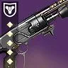 | T1 | 攻击 60 | 烈日 | 盗墓者/金中藏弹 | 战壕炮管 | 智谋 | 边打边跑原始特性可以在击杀后部分填装弹匣 | |||||
| 速射 T0：霰弹枪最强的输出 DPS 框架，动能合成的最大受益者之一，雪上加霜打拳的最常用框架，但在没有动能合成时，是每盒弹药总伤最低的框架之一，在宗师警戒等高难副本弹药经济较差 | |||||||||||||
| 威胁等级 | 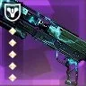 | T0 | 速射 140 | 动能 | 级联点 雪上 | 全明星 战壕 | 万神殿 | 接近无限 | 7087 (级联点) | 动能合成 | 顶级 perk 池和原始特性，最强输出绿弹之一，吃满动能合成红利的喷子，有寄生虫双发独头喷+级联点全明星搭配 pvp2 件套的顶级 dps，高难下本还有缩影+级联点全明星。注：双排锻炉眷属存在 bug，反复切换原始特性可以大幅提高持续时间 | ||
| 完美悖论 | T0 | 速射 140 | 动能 | 阻止力/威胁探测 拳击手/威胁移除器 沙场备战（旧版） | 雪上加霜/全明星 战壕炮管 | 世界 班西（旧版） | 4126 | 接近无限 | 动能合成 | 光照无影是霰弹枪最顶级的原始特性，让他成为最好用的打拳喷 阻止力+全明星是无脑摁射输出的优秀选择 | |||
| 固定低音 | T0 | 速射 140 | 虚空 | 盗墓者 | 雪上加霜 战壕炮管 | 海王星 | 原始特性小火箭作为免费的额外伤害，和推推炮同属性 | ||||||
| IKELOS_SG_v1.0.3 | T1 | 速射 140 | 烈日 | 盗墓者 | 雪上加霜 战壕炮管 | 炽天使 | 最主要用作打拳，只要有雪上加霜和合适的填装 perk 就没有问题 | ||||||
| 弑神者 | T1 | 速射 140 | 电弧 | 自填 金中藏弹 | 雪上加霜 战壕炮管 | 涅索斯 | 虽然没有盗墓者，但是起源特性可以拿到双倍弹匣非常合适 | ||||||
| 一小步 | T1 | 速射 140 | 冰影 | 盗墓者 金中藏弹 | 雪上加霜 战壕炮管 | 月球 | 完美悖论下位，可以补充暗影条 | ||||||
| 精密 T0.5：精密实际上是攻击喷的全面弱化版，但是他的弹药生成比攻击高弥补了部分不足，给到这么高的评级理由是他是在高难本中最好的反屏障紫绿弹，在如此缺少反屏障手段的最终版本出场率甚至高于攻击喷 | |||||||||||||
| 末日先知 | T0 | 精密 65 | 电弧 | 空中扳机 嫉妒军火 重建/超充弹匣 | 战壕炮管 换档 | 花园 | 3328 | 55236 | 顶级三号位和最好的反屏障原始特性，混乱无序强度红利 | ||||
| 斗牛士 64 | T0.5 | 精密 65 | 电弧 | 金中藏弹 超充弹匣 | 雪上加霜 换档/集体行动 | 贪婪之握 | 最好的副手反屏障打拳喷，适合冰泰坦飞蛾术使用 | ||||||
| 碎晶石 | T0.5 | 精密 65 | 冰影 | 金中藏弹 雪上加霜 | 战壕炮管 | 破碎王座 | 忠诚面具冰猎可用（碎晶石+裁决定论+混乱无序） | ||||||
| 玫瑰罗盘 | T0.5 | 精密 65 | 烈日 | 盗墓者 | 战壕炮管 | 高塔二至点 | |||||||
| 轻质 T0.5：轻质的 DPS 比速射略低，总伤和弹药经济比速射略高，星界虚无在副手的伤害仅次于裁决定论之下，有部分人会喜好轻质喷打拳的手感 | |||||||||||||
| 星界虚无 | T0.5 | 轻质 80 | 烈日 | 回转弹药 金中藏弹 嫉妒军火库 | 聚合充能/元素磨砺 战壕炮管 雪上加霜 诱导推销 | 沙漠 | 4314 | 52680 | 顶级 perk 池和原始特性，可搭配驱逐引擎和寄生虫打三切，高难也可使用，回转弹药可直接喷完 | ||||
| 异蚀 IV | T1 | 轻质 80 | 电弧 | 盗墓者 自填 金中藏弹 | 雪上 战壕炮管 | 先锋 | |||||||
| 重型点射 T2：本身是所有喷子中最高的总伤，有事不过四的加持会更夸张，DPS 与精密喷接近，但因为要贴脸打精准，完全比不过同类收益，由于只需要两发就可以触发级联点会作为威胁等级的触发器 | |||||||||||||
| 奥术之拥 | T2 | 重型点射 62 | 电弧 | 事不过四 重建/嫉妒军火库 | 聚合充能 精准工具 | 高塔二至点 | 3256 | 104727 | 突破清场填装 | 事不过四有极高总伤，电属性适合药剂包神器 | |||
| 纯粹回忆 | T3 | 重型点射 62 | 虚空 | 嫉妒军火库 | 诱导推销 枯萎凝视 | 熔炉 | 枯萎凝视有点意思，但是没有太多运用空间 | ||||||
| 精确重击 T3：DPS 与重型点射相近，总伤比重型点射低，但是有很夸张的转向双增伤，暂时没有太多应用场景 | |||||||||||||
| 遗产 | T1 | 精确重击 65 | 动能 | 转向 | 聚合充能/级联点 重组 | 深岩墓室 | 10610 | 动能合成 | 全游戏最高的单弹匣爆发 DPS，转向+重组的组合很有意思 | ||||
| 无声 | T2 | 精确重击 65 | 虚空 | 转向 | 元素磨砺（绝版） 诱导推销 斩首 | 分离教义 | 6691 | 78028 | |||||
| 速射重弹 T4：总伤、DPS 都是全霰弹枪中最低的存在 | |||||||||||||
| 龙䲢 | T4 | 速射重弹 87 | 冰影 | 快速命中 金中藏弹 | 精装工具 冰冷弹匣 | 高塔纪念碑 | 3175 | 55573 | |||||
绿弹 · 狙击
类型评级 T0。最好的远距离输出武器，会用来打一些机制部位(机制狙只需要斩首 perk 并且用的顺手即可)，除了一骑绝尘的热能框架狙，速射/适配/攻击的 DPS 几乎持平，主要看 perk，手感之间的区别；高冲 DPS 略低但总伤高到不现实。
由于大部分情况队伍中不会选择达西，所以伤害数据并不包含达西 15% 增伤
| 武器 | 图标 | 评级 | 框架 射速 |
属性 | 勇士 | Perk 三号位 | Perk 四号位 | 获取地点 | DPS | 总伤 | 切换 DPS | 备注 | 评级理由 |
|---|---|---|---|---|---|---|---|---|---|---|---|---|---|
| 阴谋淬砺 | T0 | 动态热量 140 | 冰影 | 斩首 | 火线 诱导推销 | 平衡 | 5637 | 77313 | 狙击手冥想 | 顶级框架顶级原始特性优秀 perk 池，速射射速攻击伤害，命运 2 最优秀的精准输出绿弹，需要学习触发动态热量限制器的手法，最好要电离散热器和大师散热，武器模组专家散热 | |||
| 普莱蒂斯的复仇 | T0 | 速射 140 | 动能 | 动能震颤/事不过四 | 全明星/元素磨砺 | 玻璃宝库 | 4147 | 接近无限 | 狙击手冥想 | 顶级 perk 池顶级原始特性，除了本身不错的输出能力，动能震颤+全明星的组合也是非常优质的过机制狙击 | |||
| 舵手 | T0 | 高冲 72 | 电弧 | 光之触碰 速射瞄准 | 元素磨砺/换档 斩首 | PVP | 3667 (疾跑取消后摇) | 200983 | 狙击手冥想 /电弧复合 | 虽然 DPS 比其他框架略低，但其高到不现实的总伤可以在一些大长轴搭配混乱无序使用，单发伤害高，是优秀的副手机制狙，有疾跑取消换弹后摇的手法，注意高爆载荷会减少伤害通常不建议使用 | |||
| 巴拉巴拉 | T1 | 攻击 72 | 动能 | 三连击 | 全明星/元素磨砺 转向 | 高塔纪念碑 萨瓦拉 | 6403 4867 | 74682 接近无限 | 转向 元素磨砺 狙击手冥想 | 使用场景局限。宝库狙的攻击框架版本，在有加速突击的情况 DPS 比宝库狙高，用转向时配合加速突击是伤害最高的狙击，但考虑到加速突击已经绝版并且大部分人不会喜欢攻击框架的手感略微降低评级 | |||
| 拥抱身份 | T1 | 适配 90 | 虚空 | 斩首 | 转向 聚合充能/元素磨砺 | 苍白之心 | 5670 | 64828 | 斩首转向 狙击手冥想 | 使用场景局限。顶级 perk 池，由于巴拉巴拉加速突击绝版所以斩首+转向是目前能刷到的最高伤害狙击，但是绝大部分情况不会有人喜欢叠转向 替代：贪婪狙 | |||
| IKELOS_SR_v1.0.3 | T1 | 速射 140 | 烈日 | 事不过四 | 聚焦狂怒 | 炽天使 | 3290 | 104301 | 狙击手冥想 燃烧狙击子弹 | 燃烧狙击子弹+狙击手冥想非常适合火速射狙的发挥 替代：花园狙 注：聚焦狂怒比精准工具总增伤高 | |||
| 继承 | T1 | 攻击 72 | 动能 | 重建 | 斩首 重组 元素磨砺 | 深岩墓室 猛攻 | 老牌好用机制狙，地窖和猛攻 perk 池不同 | ||||||
| 宁静 | T1.5 | 适配 90 | 动能 | 回转弹药 | 动能震颤 转向 全明星/元素磨砺 | 月球 | 反屏障狙，动能震颤是常规选择，转向在类似花园秒九头蛇等地有特殊作用 | ||||||
| 转瞬长矛 | T1.5 | 速射 140 | 缚丝 | 事不过四 金中藏弹 | 解构 元素磨砺 转向 | 沙漠 | 事不过四解构拆机甲很快，在终极炽天使速通中有出现 |
绿弹 · 热能手炮
类型评级 T2。在增伤被砍后，配合幸运裤电弧复合输出的伤害还算可以，但更多被用在打机制和叠加单人特工层数上
单次切换总伤和 DPS
不包含电弧复合
| 武器 | 图标 | 评级 | 框架 射速 |
属性 | 勇士 | Perk 三号位 | Perk 四号位 | 获取地点 | DPS | 总伤 | 切换 DPS | 备注 | 评级理由 |
|---|---|---|---|---|---|---|---|---|---|---|---|---|---|
| 无礼言论 | T2 | 动态热量 180 | 电弧 | 空中扳机 冷却饰品 | 精准工具 狂乱 | 无序边界 | 36488 | 5658 | 仅此一把，注意现在是否用血色浪漫叠层伤害区别不大，空扳连射 18 发需要加速突击散热全中的无礼言论，可以用 vog4 冷却饰品补足 |
绿弹 · 追踪
类型评级 T2。在有严酷折射的加持下，缚丝和虚空因为上 buff 简单都具备一定的清怪能力，在 raid 和地牢中通常承担劫子弹和打机制的角色
参考数值：DPS 2258 · 总伤 154783
事不过四
| 武器 | 图标 | 评级 | 框架 射速 |
属性 | 勇士 | Perk 三号位 | Perk 四号位 | 获取地点 | DPS | 总伤 | 切换 DPS | 备注 | 评级理由 |
|---|---|---|---|---|---|---|---|---|---|---|---|---|---|
| 无誓 | T0.5 | 适配 1000 | 缚丝 | 边打边劫 回转弹药 | 混沌重塑 元素磨砺 | 分离教义 | 顶级 perk 池顶级原始特性，缚丝对于严酷折射又是顶级属性，配合拆解能量球轻松触发，打本时可以清怪（特别是卡巴尔盾哥）、劫子弹、打机制，也是唯一可以下高难本的追踪：清理，反 50 光屏障 | ||||||
| 时间食者 | T1.5 | 适配 1000 | 虚空 | 冲击支撑 边打边劫 | 不稳定弹药 | 安可 | 不稳定弹药配合石板触发不少虚空神器 | ||||||
| 空洞拒绝 | 特殊 | 适配 1000 | 虚空 | 金中藏弹 | 冲击支撑 击杀记录 | 前兆 | 因为追踪步枪无论拾取任何大小（强化、普通、斥候）的弹药盒都会多给予 10% 备弹的特性，会用来配合完美逆行作为熔炉 2 套捡子弹武器 | ||||||
| 雷电 | T2 | 适配 1000 | 电弧 | 边打边劫 | 引爆光束/击杀记录 | 高塔运动会 | 最好获得的边打边劫追踪 |
绿弹 · 融合
类型评级 T2.5。在喷子如此强势的当下，融合步枪的生存空间被进一步挤压，除了霰弹枪无法触及的中近距离，你都应该优先考虑霰弹枪而不是融合。衡量一把枪的输出是否合格，就要看他的伤害是否在融合之上，只建议使用高冲/精密/速射
| 武器 | 图标 | 评级 | 框架 射速 |
属性 | 勇士 | Perk 三号位 | Perk 四号位 | 获取地点 | DPS | 总伤 | 切换 DPS | 备注 | 评级理由 |
|---|---|---|---|---|---|---|---|---|---|---|---|---|---|
| 高冲 T2：融合中最好的框架，DPS、总伤、射程都是融合中最高的，唯一缺点是手感不好 | |||||||||||||
| 睿智责难 | T2 | 高冲 | 电弧 | 丰盈满溢 | 受控连射 洪涝 | 铁骑 | |||||||
| 隐士 | T2 | 高冲 | 烈日 | 嫉妒刺客 | 受控连射 洪涝 | 老九锻造 | 2979 | 85266 | |||||
| 夜神长存 V | T2 | 高冲 | 缚丝 | 嫉妒刺客 | 受控连射 | 世界 | |||||||
| 冰川矿物 | T2 | 高冲 | 虚空 | 丰盈满溢 嫉妒刺客 | 受控连射 洪涝 | 曙光节 | 绝版 | ||||||
| 既定观点问题 | T2 | 高冲 | 电弧 | 丰盈满溢 嫉妒刺客 | 受控连射 洪涝 | 萨瓦拉 | 先锋球声望 bug 不好获得 | ||||||
| 精密 T2.5：总伤仅次于高冲，DPS 处于中间水平，因为反屏障在高难本可以作为精密喷的下位替代 | |||||||||||||
| 主原料 | T2 | 精密 | 电弧 | 涓流充能 金中藏弹 | 换档 洪涝 | 火力战队 先锋 | 2989 | 82701 | 加速突击+涓流充能+换档是所有融合中的最高 DPS 金中藏弹+洪涝/换档，可让松身裤猎人使用 | ||||
| 渐速音-42 | T2 | 精密 | 缚丝 | 丰盈满溢 切割 | 聚合充能/受控连射 腹背受敌 洪涝 | 快雀竞赛 | perk 池非常不错 | ||||||
| 轴向缺漏 | T2 | 精密 | 烈日 | 重建 | 洪涝 腹背受敌 | 苍白之心 | |||||||
| 插头一号 | T2 | 精密 | 电弧 | 重建 | 洪涝 | 萨瓦拉 | |||||||
| 解脱 | T3 | 精密 | 冰影 | 冰冷弹匣 | 门徒誓约 | 三反，但为了三反带一把不好用的枪是本末倒置，绝大部分情况不会考虑 | |||||||
| 速射 T2.5：DPS 比高冲略低，总伤和射程都远低于高冲，但凭借崭新的 perk 池和加速突击让 DPS 与高冲几乎持平，偏爱速射手感可以使用 | |||||||||||||
| 零镇静 | T2.5 | 速射 | 虚空 | 丰盈满溢/重建 嫉妒军火库 | 受控连射 元素磨砺 洪涝 | 巅峰 先锋 | 建议获取加速突击版本。perk 池豪华 | ||||||
| 激流 | T2.5 | 速射 | 冰影 | 丰盈满溢 自动填装枪套 | 受控连射 冰冷弹匣 | 熔炉 | 建议获取加速突击版本 | ||||||
| 笛卡尔坐标 | T2.5 | 速射 | 烈日 | 重建 嫉妒军火库 | 聚合充能 受控连射 洪涝 | 欧洲无人区 | 2987 | 57855 | 虽然没有加速突击版本，但是对于速射来说聚合充能比受控连射优秀 | ||||
| 适配/攻击 T3：适配框架与攻击框架拥有最差的 DPS 和总伤，攻击框架的每盒弹药总伤比适配高，但是输在弹药散布和不能反屏障 | |||||||||||||
| 灵巫力量 | T3 | 适配 | 电弧 | 集体爆破 | 集体行动 | 最后一愿 | 2576 | 57638 | 冰猎适合使用 | ||||
| 碎梦者 | T3 | 适配 | 烈日 | 金中藏弹 重建 | 狂乱 受控连射 | 月球 | 火属性没有玫瑰罗盘可以用 | ||||||
| 皇家行刑者 | T3 | 适配 | 烈日 | 金中藏弹 嫉妒刺客 | 洪涝 | 阿瓦隆 | 火属性没有玫瑰罗盘可以用，洪涝适合松身裤 | ||||||
| 后见之明 | T3 | 适配 | 虚空 | 金中藏弹 | 洪涝 斩首 | 老九 | 虚空属性没有特别好的反屏障绿弹，勉强可用 | ||||||
| VS 重力滞止 | T3 | 适配 | 虚空 | 金中藏弹 | 受控连射 枯萎凝视 | 晚星之主 | 虚空属性没有特别好的反屏障绿弹，勉强可用 | ||||||
| 塔霍马 01 | T3 | 攻击 | 缚丝 | 丰盈满溢 嫉妒刺客 金中藏弹 集体爆破 | 聚合充能/受控连射 洪涝 集体行动 集体拳击 | 扭曲 | perk 池优秀，有意思 | ||||||
| 回火发电机 | T3 | 攻击 | 电弧 | 丰盈满溢 超充弹匣 回转弹药 | 震颤反馈/换档 腹背受敌 | 竞技场 | 2799 | 55244 | 因为锻炉眷属原始特性可以和威胁等级缩影一起使用，震颤反馈一发触发 | ||||
| 有限未知 | T3 | 攻击 | 烈日 | 重建 金中藏弹 | 受控连射 洪涝 诱导推销 | 沙漠 | |||||||
绿弹 · 火箭手枪
类型评级 T2.5。火箭手枪在清怪方面全方位作为火箭脉冲下位，除了唯一一把顶级边打边劫食莲者没有太多可圈可点之处，但是使用时的舒适度不错
| 武器 | 图标 | 评级 | 框架 射速 |
属性 | 勇士 | Perk 三号位 | Perk 四号位 | 获取地点 | DPS | 总伤 | 切换 DPS | 备注 | 评级理由 |
|---|---|---|---|---|---|---|---|---|---|---|---|---|---|
| 食莲者 | T0（旧） T2（新） | 微型导弹 100 | 虚空 | 边打边劫（旧） 冲击支撑 空中扳机 | 枯萎凝视（旧） 不稳定弹药 狂乱/集体行动 | 巅峰 | 边打边劫食莲者是全游戏拾取范围最大的工具枪，可惜如今已经绝版 | ||||||
| 极高反射 | T2 | 微型导弹 100 | 动能 | 金中藏弹 迷惑爆发 | 全明星 狂乱 重组 辅助炸药 | 木卫二 | 动能 15% 增伤对于清怪枪是先天性优势，迷惑爆发+狂乱很有意思 | ||||||
| 蒙恩 | T2 | 微型导弹 100 | 电弧 | 空中扳机 | 福特子弹 | 战争领主的废墟 | 空中扳机+福特子弹清很快 | ||||||
| 重现记忆 | T2 | 微型导弹 100 | 烈日 | 金中藏弹/治疗弹匣 | 转向 辉耀炽热 | 熔炉 | 转向在火箭手枪上非常合适。弥补清理乏力的问题，原始特性不错 | ||||||
| 提娜莎精通 | T2.5 | 微型导弹 100 | 冰影 | 空中扳机 | 冰冷弹匣 | 铁骑 | 冰冷弹匣现在的作用有限 | ||||||
| 宣召呼唤 | T2.5 | 微型导弹 100 | 缚丝 | 金中藏弹 切割 | 混沌重塑 | 苍白之心 | 混沌重塑是个优秀的 perk |
绿弹 · 偃月
类型评级 T2.5。
| 武器 | 图标 | 评级 | 框架 射速 |
属性 | 勇士 | Perk 三号位 | Perk 四号位 | 获取地点 | DPS | 总伤 | 切换 DPS | 备注 | 评级理由 |
|---|---|---|---|---|---|---|---|---|---|---|---|---|---|
| 攻击 T2：偃月最好的框架，最好的弹药经济。适中的弹药生成、护盾持续、DPS | |||||||||||||
| 苍鹭 | T1.5 | 攻击 45 | 虚空 | 冲击支撑 金中藏弹 | 转向 不稳定弹药 | 高塔纪念碑 | 冲击支撑+转向非常优秀，NPA 神器为其量身定做，相性太好 | ||||||
| 反照率翼 | T2 | 攻击 45 | 电弧 | 空中扳机 | 福特子弹 | 高塔纪念碑 | 攻击框架的射速很好地适配了频繁换弹的节奏 注：在弹匣插上时已经可以射击，直接取消换弹后摇 | ||||||
| 倾斜角度 | T2 | 攻击 45 | 冰影 | 丰盈满溢 金中藏弹 补足神盾 | 冰冷弹匣 | 萨瓦拉 | 应该是目前最好的冰冷弹匣绿弹之一 | ||||||
| 适配 T2.5：最长的护盾持续，适中的每盒弹药总伤，最低的弹药生成和 DPS，高难没有好的反屏障武器会考虑他 | |||||||||||||
| 黄道卷线杆 | T2 | 适配 55 | 虚空 | 冲击支撑 | 混沌重塑 枯萎凝视 不稳定弹药 | 单人行动 | NPA 神器适配，枯萎凝视在偃月上非常有意思，也可以搭配邪恶收割 | ||||||
| 鲁布瑞之厄 | T2 | 适配 55 | 烈日 | 狂乱 | 混沌重塑 | 门徒誓约 | 优秀的原始特性，狂乱+混沌重塑非常有意思 | ||||||
| 拒绝召唤 | T2 | 适配 55 | 缚丝 | 切割 连锁反应 | 混沌重塑 | 深坑 | 切割+混沌重塑很有意思，可搭配废墟石板 | ||||||
| 谜团 | T2.5 | 适配 55 | 虚空 | 金中藏弹 | 狂乱 | 萨瓦图恩的王座世界 | 高难虚空反屏障没有特别优秀的武器。勉强可用 | ||||||
| 速射 T2.5：最高的 DPS 和弹药生成，但是最低的护盾持续和每盒弹药总伤，射速伤害最接近火箭手枪的偃月 | |||||||||||||
| 偏异将临 | T2 | 速射 80 | 虚空 | 冲击支撑 爆破专家 | 混沌重塑 不稳定弹药 | 救赎边缘 | NPA 神器适配，冲击支撑+混沌重塑很好 | ||||||
| 滑溜运气 | T2 | 速射 80 | 烈日 | 混沌重塑 治疗弹匣 蝴蝶 | 辉耀炽热 连锁反应 盒式呼吸法 余下三个 perk | 深渊机灵 | 三号位混沌重塑的双增伤，辉耀炽热和连锁反应可以触发压制偃月，非常有意思的一把偃月，还有蝴蝶+盒式呼吸法也很有趣 | ||||||
重弹 · 重弹狙
类型评级 T0。配合加密数据盘，翻新 A499 就是最无脑的 T0 精准输出武器，总伤/每盒弹药总伤都是相当不错，剑狙双切的 DPS 会进一步提升（尖塔套更高），搭配动能合成边打边劫总伤也趋近无限，在高难中也是非常优秀的武器
| 武器 | 图标 | 评级 | 框架 射速 |
属性 | 勇士 | Perk 三号位 | Perk 四号位 | 获取地点 | DPS | 总伤 | 切换 DPS | 备注 | 评级理由 |
|---|---|---|---|---|---|---|---|---|---|---|---|---|---|
| 翻新 A499 | T0 | 干扰武器 72 | 动能 | 速射瞄准 孤狼 | 聚合充能 | 无序边界 | 5730 | 148819 /接近无限 | 狙击手冥想 远程填装 动能合成 | 建议刷取加速突击版本 |
重弹 · 火箭筒
类型评级 T0。最优秀的非精准输出武器，在高难中也可使用，DPS 顶级，总伤/每盒弹药总伤适中，有不错的神器搭配，要注意虽然各个框架间备弹量有所不同，但是拾取的强化弹药量是一致的都为 3 发。高难中三号位通常选择自填重建或为松身裤选择集束炸弹等双增伤，vog4 爆炸光能被视为好用的增伤
狼群弹药对筒子的增幅大约在 26% 左右
持久印象对筒子的增伤大约在 27% 左右
集束炸弹对筒子的增伤大约在 25% 左右（即使是常规体型）
注：持久印象和爆炸光能都无法让狼群弹药和集束炸弹吃到增伤
双脚架偶尔可以用过机制中补充子弹，但如今不缺重弹的环境很少使用
| 武器 | 图标 | 评级 | 框架 射速 |
属性 | 勇士 | Perk 三号位 | Perk 四号位 | 获取地点 | DPS | 总伤 | 切换 DPS | 备注 | 评级理由 |
|---|---|---|---|---|---|---|---|---|---|---|---|---|---|
| 攻击 T0：最高的单发伤害（1.1），最高的射速和换弹，9 发备弹但是最高的每盒弹药总伤，拥有最强的输出筒子光芒复仇 | |||||||||||||
| 光芒复仇 | 独一档 | 攻击 25 | 烈日 | 集束炸弹/自动填装枪套 丰盈满溢/嫉妒军火库 集体爆破 | 聚合充能/持久印象 元素磨砺 集体行动 | 玻璃宝库 | 13514 11384 8226 7888 | 118926 100178 83902 100178 | 叛贼边打边劫 边打边劫 嫉妒军火库 集束炸弹 （银白重炮） | 最强的 perk 池和原始特性，全游戏最顶级的 DPS 之一，集束炸弹+聚合充能是最强的抱射输出之一，配合边打边劫更是顶级。自填+持久印象/聚合充能更多是金狙轴，还有丰盈满溢的筒子五连发。嫉妒军火三切如今不常见，集体爆破配合狼头星火泰坦可用 | |||
| 异教徒 | T1 | 攻击 25 | 电弧 | 嫉妒军火库/超充弹匣 集束炸弹 | 换档 爆炸光能 | 月球祭坛 | 超充弹匣有意思，然而由于填装速度赶不上发射速度没有那么理想，使用时最好还是切枪打法 | ||||||
| 无效安慰 | T1 | 攻击 25 | 冰影 | 重建 嫉妒刺客 冰冷弹匣/斩首 | 爆炸光能/聚合充能 元素磨砺 收割者贡品 | 深渊机灵 | 嫉妒刺客+原始特性曾经作为倾斜筒子的选择，然而如今光芒复仇是他的完整上位 | ||||||
| 恶兆 | T1 | 攻击 25 | 虚空 | 双脚架 自填 | 爆炸光能 元素磨砺 集束炸弹 | 智谋 | 边跑边打击杀填装，双脚架+爆炸光能的组合很有意思，或许可以用作清怪洗地筒子 | ||||||
| 核心星辰 IV | T1 | 攻击 25 | 缚丝 | 重建 小丑皇弹药筒 | 爆炸光能 元素磨砺 聚合充能 | 快雀竞速 | |||||||
| 适配 T0：最高的单发伤害，适中的操控和射速，9 发备弹但是最高的每盒弹药总伤，拥有众多优秀 perk 池的筒子，高难反屏障常客之一，为了增加反屏障容错通常选择重建，由于 vog4 在高难偏向使用爆炸光能，棱镜可用元素磨砺 | |||||||||||||
| 轰鸣巨人 | T0 | 适配 20 | 虚空 | 持久印象 | 聚合充能 收割者贡品 自动填装枪套 集束炸弹 | 竞技场 | 顶级持久印象+聚合充能双增伤，如果有哨兵圣盾会比光芒复仇强，可搭配单人合唱补伤害，换弹抱射也有不错的输出 | ||||||
| 注视焦点 | T0 | 适配 20 | 缚丝 | 嫉妒军火库 重建 | 聚合充能/持久印象 爆炸光能 | 先锋 | 加速突击提供额外 6% 增伤，perk 池不错 | ||||||
| 热血上头 | T0 | 适配 20 | 电弧 | 嫉妒军火库 重建 自动填装枪套 | 聚合充能 爆炸光能 元素磨砺 | 先锋 | 加速突击提供额外 6% 增伤，perk 池不错 | ||||||
| 何时何地 | T0.5 | 适配 20 | 冰影 | 重建 小丑皇弹药筒 丰盈满溢 冰冷弹匣 | 爆炸光能 收割者贡品 元素磨砺 | 沙漠 | 起源特性有额外增伤适合收割者贡品，但不足够强，更适合高难 | ||||||
| 红鲱鱼 | T0.5 | 适配 20 | 虚空 | 重建 集束炸弹 | 爆炸光能 元素磨砺 持久印象 | 萨瓦图恩的王座世界 | 翻新 perk 后不错，高难很适合搭配杀手之牙裂波者等强力虚空副手，集束炸弹双增伤配合杀手之牙松身裤使用 | ||||||
| 巅峰捕食者 | T0.5 | 适配 20 | 烈日 | 集束炸弹 重建 | 集体爆破 集体行动 爆炸光能 | 最后一愿 | 集束炸弹+集体行动适合星火泰坦，或者冰猎冰术等 | ||||||
| 高冲 T1：最高的总伤和爆炸范围和操作，11 发备弹，适中的单发伤害（1.0），打三切的切换 DPS 可以追平攻击适配的 DPS，但是如今三切没有太多使用空间，也没有特别合适的嫉妒军火 perk 池发挥 | |||||||||||||
| 熊啸 | T0.5 | 高冲 20 | 烈日 | 爆炸光能 | 收割者贡品 | 铁骑 | 爆炸光能收割者贡品双增伤有特色 | ||||||
| 海鹰 | T0.5 | 高冲 20 | 缚丝 | 集束炸弹 自动填装枪套 | 聚合充能 元素磨砺 双脚架 | 高塔纪念碑 | perk 池和原始特性回技能不错 | ||||||
| 明日回答 | T1 | 高冲 20 | 虚空 | 嫉妒军火库 空中扳机 重建 | 收割者贡品 双脚架 爆炸光能 | 试炼 | 唯一的嫉妒军火高冲 | ||||||
| 无眠 | T1 | 高冲 20 | 电弧 | 自动填装枪套 重建 | 元素磨砺 换档 | 梦城 | |||||||
| 精密 T2：11 发备弹，最低的单发伤害（0.95）和射速，除了有追踪效果之外是其他三个框架的全方面下位 | |||||||||||||
| 低温重炮 | T1.5 | 精密 15 | 电弧 | 超充弹匣 自动填装枪套 | 换档 聚合充能/持久印象 | 木卫二 | 超充弹匣刚好对上了精密的射速，可以持续进行输出 | ||||||
| 火山洪流 | T1.5 | 精密 15 | 烈日 | 集束炸弹 自动填装枪套 | 聚合充能 爆炸光能 双脚架 | 涅索斯 | 顶级原始特性（双倍弹匣）和优秀的池子，可惜在一个错误的框架 | ||||||
| 权势 | T2 | 精密 15 | 烈日 | 羸弱能量球 重建 | 集束炸弹 爆炸光能 双脚架 持久印象 | 单人行动 | 羸弱能量球+集束炸弹，狼群弹药可以产很多球 | ||||||
重弹 · 刀剑
类型评级 T0。紫刀剑绝大部分作用是用作急切赶路，在高难中还会承担反屏障的角色，输出的 DPS 和总伤/每盒弹药总伤优秀，但是近战伤害手段会更多倾向于喷子狼毒星界之火等，刀剑没有弹药生成属性，胸部弹药生成属性不生效，弹药进度接近 0 弹药生成水平
| 武器 | 图标 | 评级 | 框架 射速 |
属性 | 勇士 | Perk 三号位 | Perk 四号位 | 获取地点 | DPS | 总伤 | 切换 DPS | 备注 | 评级理由 |
|---|---|---|---|---|---|---|---|---|---|---|---|---|---|
| 轻质 T0：最好的常态急切框架，所有框架中轻击急切最远的刀剑，也是真正能被使用的 DPS 最高的框架 | |||||||||||||
| 阴沉利爪 | T0 | 轻质 | 虚空 | 急切刀锋 斩首武器 | 二元轨道 旋风利刃 | 平衡 | 5154 | 157840 | 银白利刃 拓展深渊 两左一右 | 优秀的双增伤和起源特性，输出和赶路都是顶级 | |||
| 三色矛头蝮-4bl | T0 | 轻质 | 烈日 | 急切刀锋 燃烧野心 | 混沌重塑 聚合充能 居合连斩 | 快雀竞赛 | 5474 | 145269 | 银白利刃 (猎人日志) 两左一右 | 优秀 perk 池，输出和赶路都是顶级，输出燃烧野心配合黎明副歌伤害会更高，但一般没有机会使用黎明副歌，所以采用非黎明副歌 DPS | |||
| 纳斯尔丁 | T1 | 轻质 | 电弧 | 急切刀锋 | 欧洲无人区 | perk 池一般，中个急切用来赶路即可 | |||||||
| 涡流 T0：因为最远的右键距离成为最好的超级跳急切框架，输出适合切枪打法，而不是一直抱着砍。多排 perk 急切可以配合圣贤 4 碎冰触发利刃专注实现超远距离超级跳，具体为先选择其他 perk 带忠诚面具碎冰触发利刃专注，再把 perk 切到急切和踢踏 5，这样就可以保留急切刀锋进行超级跳了。 | |||||||||||||
| 急锋 | T0 | 涡流 | 冰影 | 急切刀锋 集体爆破 | 冷冻钢铁 混沌重塑 | 巅峰 先锋 | perk 池优秀，冷冻钢铁功能性强。集体爆破+冷冻钢铁配合药剂神器寒风凛凛可以产出冰影碎片回雷 | ||||||
| 陨落铡刀 | T0 | 涡流 | 虚空 | 羸弱能量球 狂乱 斩首 | 急切刀锋 元素磨砺/旋风利刃 诱导推销 腹背受敌 | 猛攻 | 顶级 perk 池，双增伤也有输出能力，无刀剑能量转右键可以 1 发弹药一颗球 | ||||||
| 虚假偶像 | T0 | 涡流 | 烈日 | 急切刀锋 羸弱能量球 | 元素磨砺/腹背受敌 强力反击 | 苍白之心 | 苍白之心原始特性在速通中经常会搭配奶枪元素超充器刷金枪猎大招击杀 | ||||||
| 拜拜咯 | T0 | 涡流 | 缚丝 | 切割 光中藏弹 尖锐收割 | 羸弱能量球 居合连斩 元素磨砺 | 高塔纪念碑 班西 | 顶级原始特性让他成为全游戏唯一无任何前置条件只需造成伤害就可以回转大量技能能量的武器 | ||||||
| 铸造 T0：在高难中，他是最常见最好用的反屏障武器，本身也有不错的功能性和超凡效率 | |||||||||||||
| 骑士之火 | T0 | 铸造 | 虚空 | 集体爆破 | 急切刀锋 集体行动 羸弱能量球 | 单人行动 | 铸造刀集体爆破非常顶级，常见于冰电职业，药剂神器风寒（寒风凛凛）、NPA 朝向裂口等能够产出元素拾取物并且手雷比较重要的配装中 | ||||||
| 拜龙教镰刀 | T0 | 铸造 | 缚丝 | 急切刀锋 切割 | 羸弱能量球 腹背受敌 元素磨砺 | 战争领主的废墟 | 三号位急切刀锋的搭配优秀 | ||||||
| 暗夜恐惧 | T0.5 | 铸造 | 电弧 | 急切刀锋 | 震颤反馈 元素磨砺 换档 聚合充能 | 月球 | 配合震颤反馈能双反 | ||||||
| 孤空伤痕 | T0.5 | 铸造 | 烈日 | 急切刀锋 | 元素磨砺 狂乱 转向 | 试炼 | 转向很有意思，“右键打，左键打”我开玩笑的 | ||||||
| 噩兆 | T1 | 铸造 | 冰影 | 羸弱能量球 | 冷冻钢铁 居合连斩 | 安可 | 没有急切很可惜，冷钢可以三反 | ||||||
| 波形 T1：最好的清怪模型，输出虽然理论不错但是容易丢伤害并且多人伤害叠加有问题 | |||||||||||||
| 毒鲉 | T0.5 | 波形 | 烈日 | 羸弱能量球 尖锐收割 | 急切刀锋 元素磨砺/腹背受敌 燃烧野心 | 高塔纪念碑 | 5137 | 161063 | 银白利刃 (猎人日志) 一右一左 | 唯一一把波形急切反势不可挡刀，燃烧野心灼烧叠层会触发尖锐收割 | |||
| 至善 | T1 | 波形 | 电弧 | 羸弱能量球 无情打击 | 混沌重塑 腹背受敌/元素磨砺 | 救赎边缘 | 最好触发的增伤池子 | ||||||
| 深渊之刃 | T1 | 波形 | 缚丝 | 切割 无情打击 | 居合连斩 腹背受敌/元素磨砺 | 班西 | 范围上切割 | ||||||
| 适配 T1.5：没有突出优点的框架，遗赠比其他的适配刀伤害天生高 | |||||||||||||
| 遗赠 | T0.5 | 适配 | 电弧 | 无情打击 震颤反馈 | 元素磨砺 腹背受敌 居合连斩 | 深岩墓室 | 5692 | 135481 | 银白利刃 (猎人日志) 一右一左 | 天生比其他适配框架伤害高大约 8%，输出顶级刀剑，增伤比较依赖棱镜 | |||
| 强硬切割 | T1.5 | 适配 | 电弧 | 羸弱能量球 | 急切刀锋 | 高塔纪念碑 | 一左一右刚好一颗球，原始特性对屏障增伤 | ||||||
| 另一半 | T1.5 | 适配 | 虚空 | 急切刀锋 | 狂乱 腹背受敌 | 永恒 | |||||||
| 静待回归 | T1.5 | 适配 | 烈日 | 还治彼身 | 急切刀锋 | 梦城 | |||||||
| 和风 | T2 | 适配 | 冰影 | 羸弱能量球 | 冷冻钢铁 | 高塔纪念碑 | 三反刀，没有太多作用 | ||||||
| 攻击 T1.5：夸张的双增伤让其成为理论最高 DPS 的紫刀剑，但是没有太多实战使用 | |||||||||||||
| 永世英雄 | T1 | 攻击 | 电弧 | 集体行动 | 旋风利刃/元素磨砺 | 贪婪之握 | 6331 | 152997 | 风寒 （药剂包；推推位） 银白利刃 (猎人日志) 一右一左 | 原始特性实际上就是攻击急切刀，但是会有硬直实际上不好用，切出来砍第一刀最好先轻击再衔接重击否则直接重击很容易砍空，双增伤是顶级伤害选择，但是启动困难，最好一个使用药剂包风寒的推推位棱镜猎或棱镜术使用冰粪坑为全队产冰影碎片 | |||
| 史赛克的老练 | T1 | 攻击 | 虚空 | 狂暴 | 转向 腹背受敌 | 竞技场 | 7309 | 123642 | 银白利刃 拓展深渊 (猎人日志) 一右一左 | 狂暴和转向都是不好触发的增伤，如果有条件触发的话他是伤害最高的紫刀剑，优秀的原始特性 | |||
重弹 · 线融
类型评级 T2。除了总伤比翻新 A499 略高，DPS 差了相当多，但因为动能合成的存在直接消除了总伤差距，可以说是翻新的全方面下位。或许只有在队伍中几乎无法施加易伤手段、聚合充能叠层并不理想并且是长轴时才适合上场（粒子解构），单人 solo 地牢的情况也可以使用。粒子解构是施加在战斗人员身上的易伤，不与其他易伤叠加
| 武器 | 图标 | 评级 | 框架 射速 |
属性 | 勇士 | Perk 三号位 | Perk 四号位 | 获取地点 | DPS | 总伤 | 切换 DPS | 备注 | 评级理由 |
|---|---|---|---|---|---|---|---|---|---|---|---|---|---|
| 精密 T2：DPS 比适配点射略高，总伤几乎是适配点射的双倍 | |||||||||||||
| 揭纱露眼 | T1.5 | 精密 | 虚空 | 事不过四 | 精准工具/元素磨砺 | 深坑 | 3853 | 164743 | 粒子解构 不稳定神枪手 | 顶级增伤原始特性，不错的 perk 池，精准工具在携带手部填装时可以续上，相当于 27% 左右的增伤，不稳定神枪手又可以增加一点 DPS。原始特性志愿容器 15% 加速充能在 DPS 更优秀，异端行径 7% 增伤在总伤上更优秀，通常建议使用志愿容器。 有三种选择（优先级从前到后）：①加速线圈+大师换弹+充能模组②强化电池+大师换弹+弹匣模组③加速线圈+大师充能+充能模组。 由于粒子解构是施加在战斗人员身上的易伤，所以可以蹭队友的粒子解构，在有 15% 易伤时，可以同时吃到粒子解构和拓展深渊的 10% 增伤，很少有这种应用场合。 | |||
| 灾变 | T1.5 | 精密 | 烈日 | 事不过四 | 聚合充能 聚焦狂怒 元素磨砺/诱导推销 | 门徒誓约 | 顶级 perk 池 | ||||||
| 适配点射 T3：全方面劣势于精密框架，特殊用法偶尔有可取之处 | |||||||||||||
| 蔷薇的蔑视 | T2 | 适配点射 | 烈日 | 回转弹药 | 腹背受敌 混沌重塑/聚合充能 | 梦魇根源 | 3977 | 105143 | 原始特性有对光明写魔族的 10% 额外增伤，加上腹背受敌就是深渊机灵尾王的特攻武器 | ||||
| 风暴猎人 | T2.5 | 适配点射 | 电弧 | 超充弹匣/小丑皇弹药筒 快速命中 | 聚合充能/精准工具 换档/元素磨砺 火线 | 二象性 | 在有队友使用粒子解构时可以用电弧复合吃额外增伤，弑后者同理 | ||||||
重弹 · 重型弩箭
类型评级 T2。有接近筒子的不错切换 DPS，好奇之器银白弩箭的增伤，但是由于缺乏优秀的 perk 池或者对应属性并且需要打精准，只有好建议真正有全游戏最高输出之一的 DPS 使用场景
| 武器 | 图标 | 评级 | 框架 射速 |
属性 | 勇士 | Perk 三号位 | Perk 四号位 | 获取地点 | DPS | 总伤 | 切换 DPS | 备注 | 评级理由 |
|---|---|---|---|---|---|---|---|---|---|---|---|---|---|
| 好建议 | T0 | 高冲击力 | 虚空 | 嫉妒军火库 | 高地 | 高塔纪念碑 萨瓦拉 | 17960 11196 | 167925 104681 | 3X 需求层级切好建议/ 机巧纬线传家宝好建议 (银白箭袋) | 嫉妒军火库+高地配合三箭虚空猎，有机巧纬线+传家宝+好建议，单人特工命运眷顾的单人情况下顶级 dps（单人一波奈扎雷克）。还有三个需求层级射圈后切换到枯萎囤积/区域拒止等 dot 好建议双切的全游最高 DPS，曾经能刷到加速突击版本，如今已绝版，嫉妒军火库的打法在高难本也可以被使用来疯狂灌伤。 | |||
| 沉没 | T2 | 高冲击力 | 冰影 | 自动填装枪套 | 冰冷弹匣 聚合充能 火线 | 高塔纪念碑 | 唯一一把自填冰弩，需求层级射击穿插一发冰弩会比摁射需求层级高大约 25% 的 DPS，但通常没有必要为自己增加操作难度，二号位充能弩箭最优秀 |
重弹 · 榴弹
类型评级 T3。惨不忍睹的总伤和每盒弹药总伤，勉勉强强的 DPS，没有专属增伤神器，只有药剂包电弧复合不祥之兆可以利用，所以电榴弹将是主要的推荐对象，但是电飞蛾的索敌也存在问题。级联点的双增伤爆发用处也极其有限，速射框架在 DPS 以极小的差距优于其他两个框架，总伤略低于其他两个框架，在每盒弹药总伤上由于都拾取 5 发弹药适配和波形要更优秀
可以说动能冲击、突破清场、电弧复合是榴弹的主要增伤神器
拓展深渊在有 15 易伤时也有一定的性价比
电弧致盲生效时间为 10 秒
vog4 配合爆炸光能适配榴弹，队友越多越好，爆炸光能的实际增伤接近 50%
| 武器 | 图标 | 评级 | 框架 射速 |
属性 | 勇士 | Perk 三号位 | Perk 四号位 | 获取地点 | DPS | 总伤 | 切换 DPS | 备注 | 评级理由 |
|---|---|---|---|---|---|---|---|---|---|---|---|---|---|
| 咒骂 | T2 | 速射 150 | 电弧 | 嫉妒刺客 | 诱导推销 | 萨瓦图恩的王座世界 | 4989 | 71963 | 电弧复合 | 不详之兆->驱逐引擎->不祥之兆->21 发咒骂->不详之兆->驱逐引擎->不祥之兆->（突破清场填装）8 发咒骂 | |||
| 末日 | T2 | 适配 120 | 电弧 | 嫉妒军火库 超充弹匣 自动填装枪套 | 爆炸光能/诱导推销 | 智谋 | 4833 | 74503 | 电弧复合 | 2 发不祥之兆->驱逐引擎->4 发末日循环（提高总伤，拉长输出时间保证爆炸光能） 替代：苦乐参半（老九/凯尔之陨） | |||
| 喧嚣 | T2.5 | 波形 120 | 电弧 | 嫉妒刺客 嫉妒军火库 | 我为人人 | 高塔纪念碑 | 虚空箭波形在有单人特工的加持下可以单人一波晚星之主老二 | ||||||
| 边缘交通 | T2.5 | 适配 120 | 虚空 | 级联点 嫉妒军火库 自动填装枪套 | 爆炸光能 元素磨砺 诱导推销 | 猛攻 | 23733 | 10122 | 单次爆发 拓展深渊 | 级联点爆炸光能作为顶级 DPS 爆发 | |||
| VS 寒冷抑制 | T2.5 | 速射 150 | 冰影 | 级联点 嫉妒军火库 冰冷弹匣 | 爆炸光能/聚合充能 元素磨砺/诱导推销 腹背受敌 | 晚星之主 | 19469 | 8866 | 单次爆发 | 豪华的 perk 池和原始特性，级联点爆炸光能/腹背受敌作为顶级 DPS 爆发 | |||
| 爱与死亡 | T2.5 | 波形 120 | 烈日 | 级联点 嫉妒军火库 重建 辉耀炽热/即兴弹药 | 爆炸光能 聚合充能 元素磨砺 诱导推销 | 月球 | perk 池非常豪华 | ||||||
| 科拉西斯的苦恼 | T2.5 | 速射 150 | 缚丝 | 嫉妒军火库 嫉妒刺客 重建 | 混沌重塑 腹背受敌 诱导推销 | 梦魇根源 | 原始特性对光明邪魔族有额外 10% 增伤 | ||||||
| 永存者 | T2.5 | 速射 150 | 缚丝 | 嫉妒军火库 自动填装枪套 | 聚合充能 元素磨砺/诱导推销 爆炸光能 | 史诗沙漠 | perk 池和起源特性优秀 |
重弹 · 机枪
类型评级 T3.5。机枪的总伤极高但是 DPS 极低，比绿弹还低，清怪也轮不上他，是真正意义上没有任何用处的武器，框架之间的平衡不错：DPS：速射＞攻击＞适配＞高冲＞热能。总伤：高冲＞适配＞攻击＞速射＞热能。每盒弹药总伤：高冲＞热能＞适配＞攻击＞速射。因此清怪的优选是攻击、适配、高冲，而攻击和适配又因为手感优秀被更多人使用。个人认为击杀记录并不是特别优秀的 perk
参考数值：DPS 2533 · 总伤 243302
| 武器 | 图标 | 评级 | 框架 射速 |
属性 | 勇士 | Perk 三号位 | Perk 四号位 | 获取地点 | DPS | 总伤 | 切换 DPS | 备注 | 评级理由 |
|---|---|---|---|---|---|---|---|---|---|---|---|---|---|
| 惩戒措施 | T2.5 | 攻击 600 | 虚空 | 转向 不稳定弹药 爆破专家 | 元素磨砺 击杀记录 聚合充能 枯萎凝视 | 玻璃宝库 | 框架、手感、属性、perk 池和原始特性都是最顶级的 | ||||||
| 锤头 | T3 | 适配 450 | 虚空 | 狂暴 不稳定弹药 事不过四/即兴弹药 | 铤而走险 击杀记录 | 竞技场 | 还行的 perk 池和顶级原始特性 | ||||||
| 环形逻辑 | T3 | 适配 450 | 缚丝 | 萤火虫 事不过四 | 元素磨砺 二元轨道 铤而走险 击杀记录 | 海王星 | 优秀的 perk 池和起源特性 | ||||||
| 专业记忆 | T3 | 攻击 600 | 缚丝 | 幼雏 重建 | 元素磨砺 集体行动 铤而走险 狂乱 | 苍白之心 | 优秀的 perk 池和起源特性 | ||||||
| 忠于职守 | T3 | 适配 450 | 烈日 | 辉耀炽热 | 诱导推销/击杀记录 | 试炼 | 三号位辉耀炽热 | ||||||
| 远方黎明 | T3 | 攻击 600 | 烈日 | 燃烧野心 三连击/即兴弹药 | 转向/二元轨道 辉耀炽热 击杀记录 | 高塔二至点 | 三号位燃烧野心 |